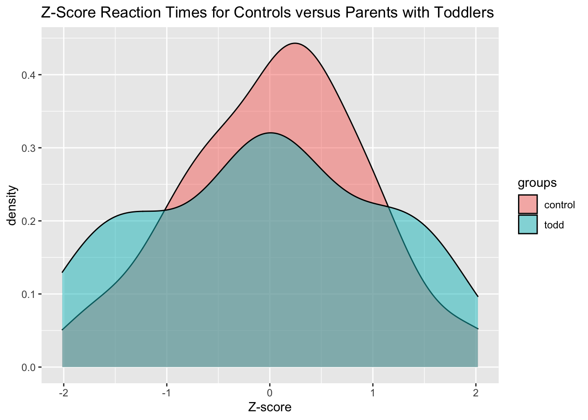
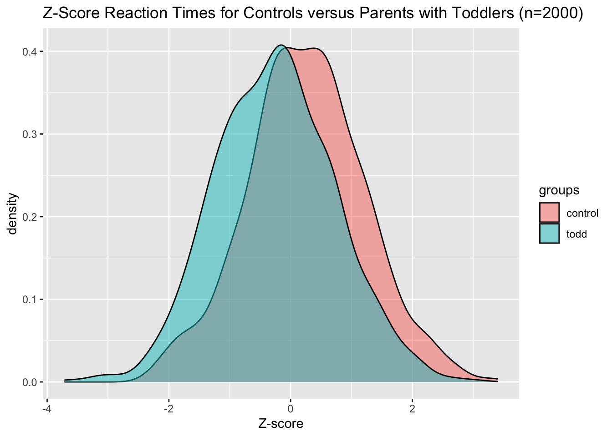

Statistics in the 21st century should be learned using computers. Specifically, simulations can be used to understand statistical concepts through play and tinkering (the best way to learn!).
Simulation inverts the process of sampling from a population and estimating parameters. We instead fix a model and set its correspond
Simulating Reaction Times
We assume that mean reaction time is normally distributed with a mean of \(480\) and SD of \(40\) for the parents with toddlers, whereas the parents without toddlers are assumed to have mean reaction times from a normal distribution with a mean of \(500\) and SD of \(40\).
df %>%ggplot(aes(x=z_rt, fill=groups)) +geom_density(alpha=0.5) +labs(title="Z-Score Reaction Times for Controls versus Parents with Toddlers",x="Z-score")

Let’s compare the mean and standard deviations from our simulated samples now. Are they different from the population parameters we set?
# A tibble: 2 × 3
groups mean_rt sd_rt
<chr> <dbl> <dbl>
1 control 485. 35.3
2 todd 481. 45.3
Let’s run a t-test too:
t.test(df$rt ~ df$groups)
Welch Two Sample t-test
data: df$rt by df$groups
t = 0.5871, df = 92.511, p-value = 0.5586
alternative hypothesis: true difference in means between group control and group todd is not equal to 0
95 percent confidence interval:
-11.36773 20.91001
sample estimates:
mean in group control mean in group todd
485.4062 480.6351
We see that with group sizes of 50, the estimated parameters are slightly off from the population parameters. We can improve this by increasing the sample size.
group_size <-1000todds <-rnorm(n=group_size, mean=480, sd=40)controls <-rnorm(n=group_size, mean=500, sd=40)df <-tibble(groups =rep(c("todd", "control"), each=group_size),rt =c(todds, controls)) %>%# compute z-scoresmutate(z_rt = (rt-mean(rt))/sd(rt))df %>%ggplot(aes(x=z_rt, fill=groups)) +geom_density(alpha=0.5) +labs(title="Z-Score Reaction Times for Controls versus Parents with Toddlers (n=2000)",x="Z-score")

Now the estimates are closer to the true population value, though still not quite perfect!
# A tibble: 2 × 3
groups mean_rt sd_rt
<chr> <dbl> <dbl>
1 control 502. 40.3
2 todd 481. 41.0
t.test(df$rt ~ df$groups)
Welch Two Sample t-test
data: df$rt by df$groups
t = 11.679, df = 1997.5, p-value < 2.2e-16
alternative hypothesis: true difference in means between group control and group todd is not equal to 0
95 percent confidence interval:
17.67332 24.80684
sample estimates:
mean in group control mean in group todd
502.0352 480.7951